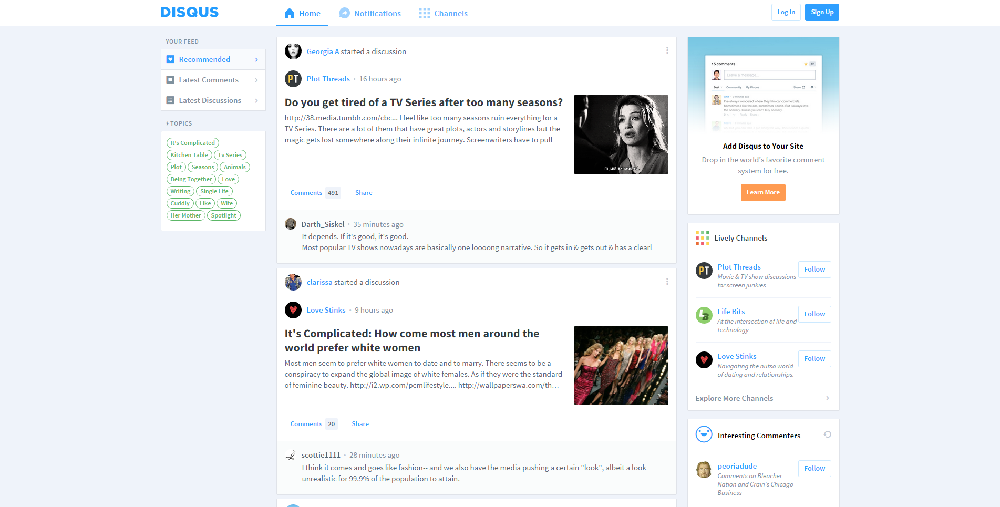
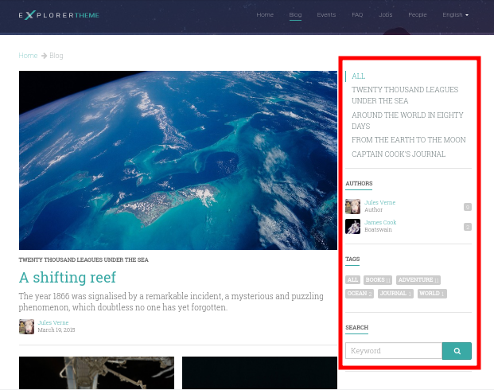

Sistema de CMS para Django
Buenas a todos. Es fácil que muchos aquí hayáis venido tentados por la palabra CMS, sin haber tocado previamente Django. Para todos aquellos, haré una pequeña introducción.
Framework de desarrollo web en Python.
(es decir, te toca picar código).
Django es lo que se denomina un framework para el desarrollo web.
Para desarrolladores
Django permite a los PROGRAMADORES crear sitios web profesionales en muy poco tiempo.
(ayuda a programar webs a medida)
Es decir, está orientado a la creación de nuevos sitios profesionales. Ofrece las herramientas para trabajar.
Pero... ¿y Django CMS? ¿Los CMS no eran "automágicos" y no necesitas programar nada?

Ahora puede que algo os estéis preguntando. ¿Programar? ¿Pero los CMS no iban de crear sitios sin tener ni idea?
Los CMS no son magia, sino gestores de contenido
(Content Management System).
Pero ya llegaremos a eso...
Aunque es común la confusión, en realidad CMS viene de Content Management System, o lo que es lo mismo, gestores de contenido.
Framework
Y eso significa...
Herramientas unificadas y normas de trabajo para un correcto desarrollo.
(es decir, programar sin crear un frankenstein con snippets de Stack Overflow).
Volviendo a Django con los frameworks, un framework es un conjunto de herramientas unificadas y métodos de trabajo para el desarrollo.
Ventajas
- Código más reutilizable.
- Código de mejor calidad.
- Software más seguro.
- Desarrollo más rápido.
Esto trae muchas ventajas, como las que tenéis aquí: ....
Por tanto:
Django (y Django CMS) son una buena solución cuando necesitas una web profesional a medida.
Y algunos ejemplos son:
Por tanto, Django, y Django CMS por ende, es una buena solución para crear webs desde cero. Y como muestra de su éxito, aquí tenéis algunos sitios que usan Django:
Nasa | Washington Post | |
Firefox | Disqus | Bitbucket |
|  |
Qué ofrece Django
- Patrón Modelo-Vista-Controlador (MVC) con:
- Sistema ORM propio.
- Lenguaje de plantillas HTML propio.
- Vistas (controlador) genéricas POO.
- Sistema de urls.
Perdonad que me enrrolle, pero al ser Django CMS unos módulos para Django, debo seguir hablando de él. Al ser todas las características de Django también aplicables a Django CMS, repasaré brevemente sus bondades: ...
- Localización (l10n) e Internacionalización (i18n)
- Middleware, que controla la entrada y salida.
- Sistema de usuarios y permisos.
- Medidas de seguridad integradas (XSS, CSRF, SQL Inj., clickjacking...).
- Panel de administración de datos.
¿Os convence Django?

Pero falta algo...
No obstante, entre estas herramientas falta algo.
CMS
Herramientas para CMS. Y aquí es donde llega Django CMS.
Django CMS
Por fin, ya empiezo con Django CMS. Perdonad la espera. Para introduciros, os enseño primero una web construida con Django CMS, desde el punto de vista del usuario.
Aquí podéis la portada, con secciones diferenciadas y contenido dinámico. También tenéis aplicaciones como blog, todas opcionales, y que tenéis que poner vosotros mismos. Como podéis ver hay widgets, o como llamamos nosotros, plugins a la derecha. También tenéis una App para eventos con un calendario, un FAQ, o un listado de personas, que son los que crean contenido y las entradas del blog. -- Ahora lo veremos desde el punto de vista del administrador.
Para acceder al modo admin, ponemos en la url el parámetro edit. Aparecerá arriba la opción para logearse. Pulsamos, y nos conectamos usando un usuario local. En modo admin, todos los elementos son editables. Aparecerá un tooltip avisándonos de ello y podemos editarlo con doble clicl . Los elementos dinámicos también son editables de esta misma forma como podéis ver. Los cambios no se aplican para los usuarios hasta que confirmamos. Incluso el menú de arriba es editable así. Si véis los elementos de la derecha, que son también plugins, podemos añadir otro más desde el apartado "structure". Añadiremos un calendario.
Menú

Vale. Hemos visto muchas cosas en este vistazo rápido. Ahora lo veremos con detalle, empezando por el menú. Si os fijáis, Django CMS incluye un menú, el cual puede tener incluso sub-elementos. Es editable desde Django CMS y podremos añadir nuestras propias páginas de contenido o aplicaciones a este menú. El menú puede ponerse donde se quiera en el template, incluso más de un menú.
Bloques para plugins
(lo que en otros sistemas se denominan widgets)
En vez de widgets, como se llamarían en otros CMS, Django CMS tiene plugins. Éstos se colocan en secciones llamadas placeholders, que podremos poner donde queramos en nuestros templates. Los plugins pueden añadirse, reordenarse y quitarse a voluntad.
Edición de contenido
Como se ha visto antes, haciendo doble clic en un elemento, puede modificarse. El contenido que puede modificarse así, es el de los plugins, o de contenido de modelos de Django que hemos dicho previamente que es editable de esta forma.
Por qué
Django CMS
¿Y no otro CMS para Django, como Wagtail o Mezzanine?
- Gran soporte para internacionalización.
- Muy extensible y modular.
- Aprovecha y no sustituye a Django.
- Más opciones de personalización.
- Es el más popular y con mejor soporte.
Qué incluye
Django CMS
Borradores y publicación de contenido
- Al editar una página, ésta queda como borrador hasta que la publicamos.
- Podemos dejar la página como borrador, y establecer una fecha de publicación.
En este caso añadiremos una nueva página de contenido y luego la editamos. Hasta que no confirmamos que queremos publicarla, los usuarios normales no podrán verla.
Sistema de versiones
- Tras cualquier cambio, podemos ir a una versión anterior de la página.
- También es posible revertir los cambios.
Ahora imaginemos que metemos la pata editando un contenido. Podremos revertir los cambios usando las fechas del panel superior, o incluso revertir los cambios.
Páginas en diferentes idiomas
- Una página de contenido puede encontrarse en tantos idiomas como estén configurados.
- Es posible configurar el comportamiento si la traducción no existe (404, redirección...).
- Para hacer una traducción, se crea una nueva página en el idioma, y se copia el contenido de otro idioma.
Podemos configurar el comportamiento si la página de un idioma no está. En este caso, da un 404. Creamos la página en el idioma. Ahora, copiamos todo el contenido de la versión en inglés, y lo traducimos.
Uso de plugins
- Los plugins son el equivalente a los widgets de otros sistemas.
- Se puede poner plugins en los espacios definidos por el usuario llamados placeholders.
- Es fácil crear nuevos plugins, y éstos pueden interactuar con el contenido de la página.
- Un plugin puede contener otros plugins. Por ejemplo, un plugin de panel de alerta contiene botones, texto...
Podemos ver los plugins usados en esta página en la sección estructura. Añadimos un nuevo plugin, que es un row a 2 columnas de Bootstrap. Cambiamos su posición, y metemos dentro otro plugin, un panel de Bootstrap también, Metemos en el titular texto, y de contenido un botón. Añadimos en la otra columna un mapa. Decir, que todo el contenido en Django CMS, son plugins, y se añaden como tales.
Placeholder
Permite definir dónde irán los plugins (bloques, widgets).
<div id="content"> {% placeholder "content" %} </div> <div id="sidebar"> {% static_placeholder "sidebar" %} </div> ... <div id="footer"> {% static_placeholder "footer" %} </div>
Los placeholder y placeholder_static permiten definir dónde irán los plugins en nuestra página. El argumento entregado define el identificador de placeholder, que permite reutilizarlos entre templates.
Uso de Apphooks
- Son aplicaciones preparadas para insertarse en el sitio por el usuario.
- Algunos ejemplos son aplicaciones de blog, comunidad, ofertas de trabajo...
- Es posible tener varias veces integrada la misma app en el mismo sitio.
- Los Apphooks se integran fácilmente en el menú, y pueden tener submenús.
Aquí creamos una nueva página, que no será de contenido. Luego, tras crearla, vamos a sus parámetros avanzados y decimos que queremos que sea una App, en este caso de blog. Estas Apps pueden requerir de parámetros adicionales, pero yo los tengo ya hechos para ahorrar tiempo.
Algunos ejemplos
Wizard (crear página)
- Permite crear páginas de contenido o de los diferentes AppHooks.
- Podemos hacer nuestros propios wizard para facilitar crear contenido.
Para terminar, Django CMS incluye una forma de crear contenido fácil mediante asistentes. Aquí podéis ver los ya disponibles. Podéis crear los vuestros propios.
Cómo probar Django CMS
- Pruébalo en la demo: http://try.django-cms.org/
- Usa el cloud: https://www.divio.com/
Este es un ejemplo de cómo funciona Divio Cloud. Aquí podéis crear vuestros proyectos y lanzarlos. Decir, que a mí no me pagan para esto.
Quiénes confían en Django CMS...
 | |||
Ejemplo: Salt

Más ejemplos en:
¡Muchas gracias a todos!
- Sitio web: http://nekmo.com
- Email: contacto@nekmo.com
- Telegram: @nekmo
- Twitter: @nekmocom
Muchas gracias. Por si queréis hablar conmigo, podéis hacerlo por estos medios, o luego al final.